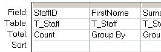

Count records (SQL).
Syntax
Count(expression)
Key
expression A field or string expression.
Use the Count function in the access query builder by clicking the Totals toolbar button:
Σ
The Count() function is used in conjunction with the Group By clause.
Example
In a query:

In VBA:
Select Count(sales_id) from T_Sales Group By Product;
“All that glitters is not gold. All who wander are not lost‚” ~ William Shakespeare
Related:
DCount - Count the number of records in a table/query.
Avg (SQL) - Average
Max (SQL) - Return the maximum value from a query.
Min (SQL) - Return the minimum value from a query.
Partition (SQL) - Locate a number within a range.
Sum (SQL) - Add up the values in a query result set.